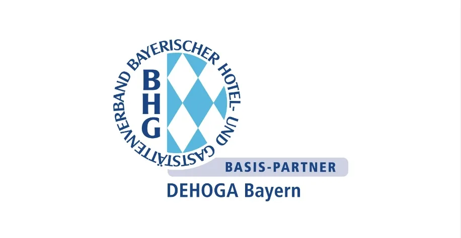

uniworks wird DEHOGA Mitglied

uniworks geht den nächsten Schritt in der Gastronomie- und Hotelleriebranche: Ab sofort sind wir Mitglied der DEHOGA Bayern. Doch was bedeutet das für Unternehmen im Gastgewerbe, und welchen Mehrwert bringt unsere Mitgliedschaft?
Was ist die DEHOGA Bayern?
Die DEHOGA Bayern (Deutscher Hotel- und Gaststättenverband Bayern e.V.) ist der führende Verband für die Hotellerie und Gastronomie in Bayern. Er vertritt die Interessen von Restaurants, Hotels, Bars, Catering-Unternehmen und vielen weiteren Betrieben dieser Branche. Dabei geht es nicht nur um politische Interessenvertretung, sondern auch um praxisnahe Unterstützung für Unternehmen – sei es durch rechtliche Beratung, Weiterbildungsmöglichkeiten oder branchenspezifische Netzwerke.
Durch seine enge Zusammenarbeit mit Betrieben jeder Größe trägt die DEHOGA Bayern dazu bei, die Branche zu stärken, Innovationen zu fördern und Lösungen für aktuelle Herausforderungen zu bieten.
uniworks als starker Partner für die Branche
Mit unserer Mitgliedschaft in der DEHOGA Bayern unterstreichen wir unser Engagement, Gastronomie- und Hotelleriebetriebe in Bayern noch gezielter zu unterstützen. uniworks bietet Unternehmen jeder Größe individuelle Lösungen zur Personalgewinnung – flexibel, effizient und passgenau.